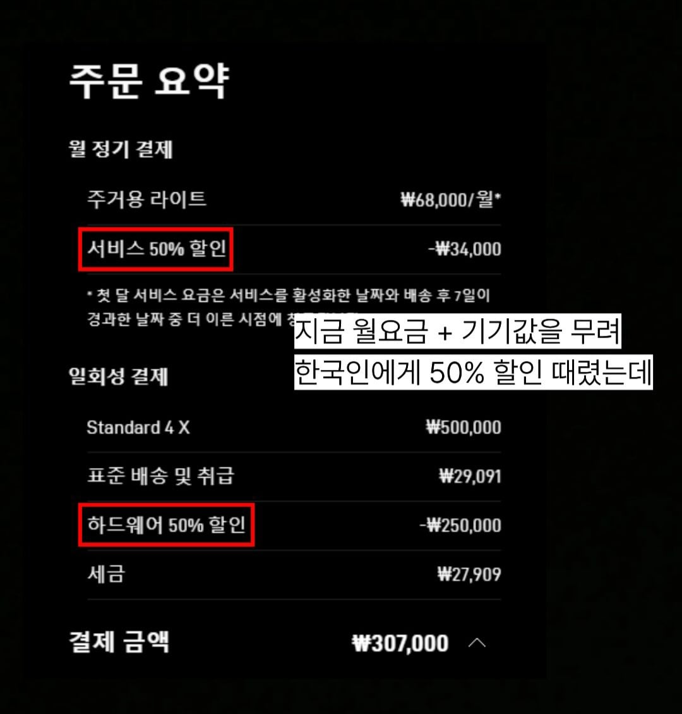
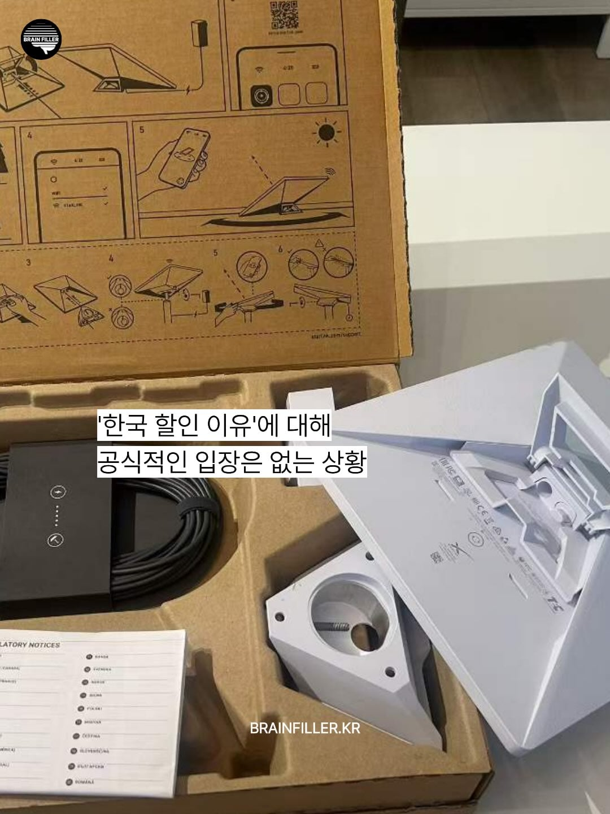
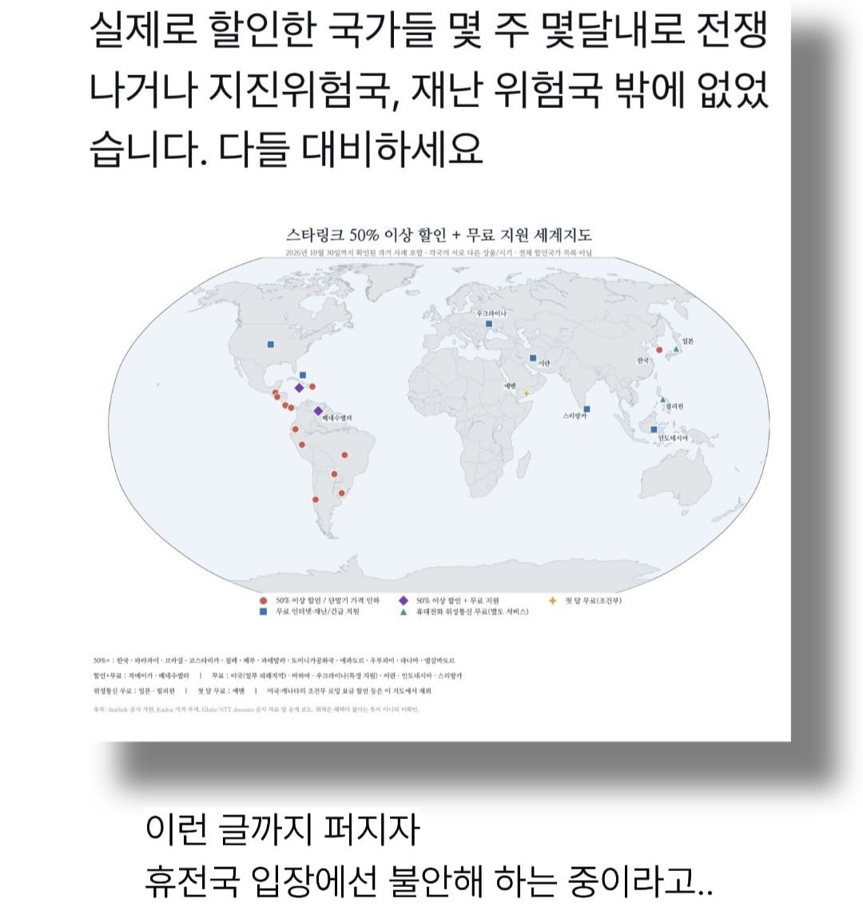

지인 강원도에 농사짓는데
인터넷 깔려면 수천이라고 스타링크 쓴다고 함
케이블 공사 쉽지 않은 곳은
괜찮아 보이네
아직 그런곳이 있나 보더라고
오지에 사나보네
지리가 오지네요
전쟁, 재난등으로 유선망이 끊기면 필요하겠지...?
그 정도면 전기도 안 끊길려나
캠핑카 ... 근데 어지간하면 핸드폰 테더링으로 다 되긴할텐데...
중계기 맛가면 답없음
전쟁시 1순위로 통신망 부수는거임. 중계기 박살나면 핸드폰테더링을 어케함.. 그래서 아직도 군에서 999k같은거 운용하는거고
배 위에서 넷플릭스 보기
섬이나 산간 벽지 오지에 충분히 쓸만할 듯
우물안 개구리 삶
전쟁 말곤 오지
김정은 사망 찌라시가 자꾸 도는걸 보니까 뭔가 있을거같긴 해
아까 철원 하사 한 분 순직한것도 걱정되네
오 스타링크로 바꿀까
태평성대인데
인디언 기우제 ON
그것보다는 다른 나라는 자동차에서도 사용이 가능한데
스타링크는 정부규제 때문에 차량 이동중에는 사용불가임. 물론 보행중에는 사용 가능하나
누가 그 안테나를 들고 다니나.
어차피 전기 끊기면 무용지물 아니냐
ups써야지
배터리팩으로 하는거라
그것까지 걱정되면 비상용 발전기나 태양광 사야지
미국은 그렇다 치고,
일본, 캐나다, 호주는...? 걔네도 전쟁남?
ㅇ?... 생존템 아니냐.. 살까
흠 대비하는것도 나쁘지 않을듯
기존가격이면 오지 아닌이상 쓰는사람 없을태니 할인하는거지 ㅈ들갑은
50% 할인이면 미니 하나 쟁여둘까...
근들갑 시~발ㅋㅋ 바이럴을 뭐 이따구로 돌리냐
생존템 필요하고 '대비'하셔야 된다잖어 ㅋㅋ
스타링크 쓴다고 해서 뚫리는건 없다고 함
근데 원양항해 나가는 배 말고 그냥 한국 땅에서 사는 일반인이 이걸 쓸 이유가 있음? 통신사 어디든 다 터지잖아
원룸 이리저리 옴겨 다닐때 개좆같을 때
좋겠는데 3만원대인가
막짤 사진이랑 사족이랑 딱봐도 틀린데 뭐 문맹을 위한 사족이냐
ㅋㅋㅋㅋㅋㅋ 진짜 요즘 이런글 개많네
첫달할인임?
일본 호주 뉴질랜드 캐나다 얘네도 비슷한 할인했었는데 뭐 전부 전쟁대비였음? ㅋㅋㅋㅋㅋ
아 요즘 불안하네
걍 집에다 식량, 식수나 한 일주일치 쟁여둬라 솔직히 코딱지만한 나라에서 가면 어딜 가겠냐 걍 집에 있다 죽으면 쩔수지
요즘 카드뉴스 ㅄ같은거 개많네
저게 한달 이용료야?
바이럴을 뭐 이런식으로 하냐 ㅋㅋㅋㅋ
전쟁징후란건
외국인 죄다 튀고 외국자본 죄다 헐값에 던지고 튀는
그런걸 말하는거에용~
아따 스타링크도 아는 정보를 왜 다른 부자 다른 국가들은 모를까 ㅠㅠㅠ
이거 쓰는거 봤는데 일단 하늘을 바라보는 평평한 장소가 있어야됨.
아파트, 다세대, 원룸은 일단 옥상층 혼자쓰는거 아니면 속도 반토막날걸?
스타링크 롬 나올때 일본도 50% 할인하고 했는데 뭐 난카이 트로프라도 예측해서 할인한거냐? ㅋㅋㅋ
어허 정훈 교육 중인데 교육생이 함부로 떠들게 되어있나?
속도는 잘나오나?
아뮤튼 할인이 들어가묜 뭔일이 난다니꺄요 냉큼 사세욧
궁금한게
우리나라에서 스타링크 사용 할 필요가 있어...?
재난, 전쟁 대비용외애는 딱히 필요 없어 보이는데